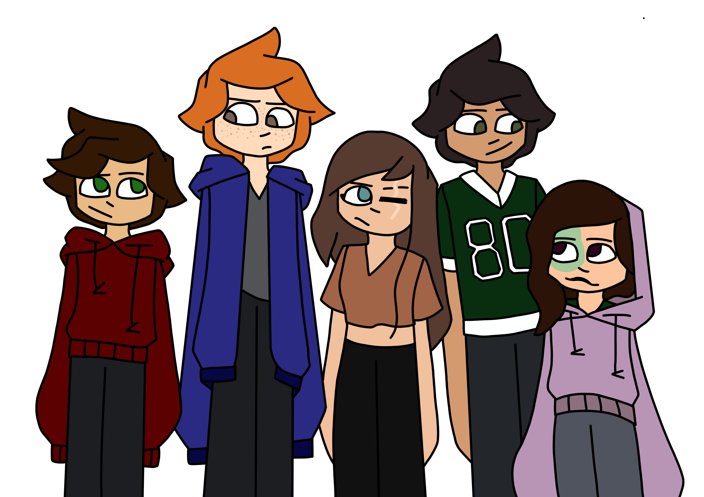
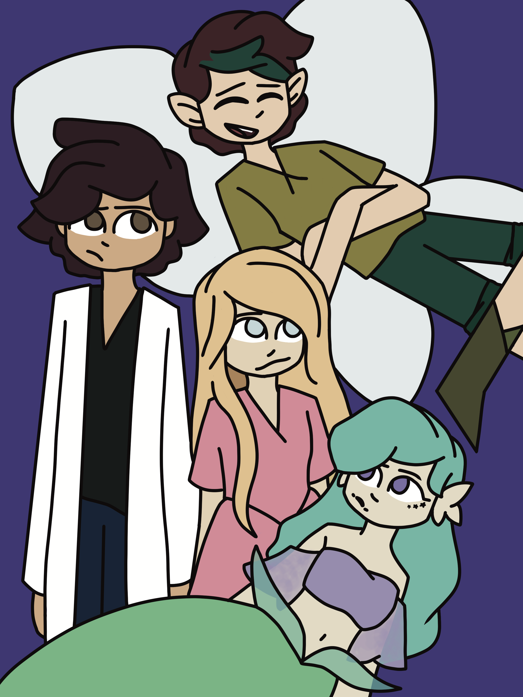
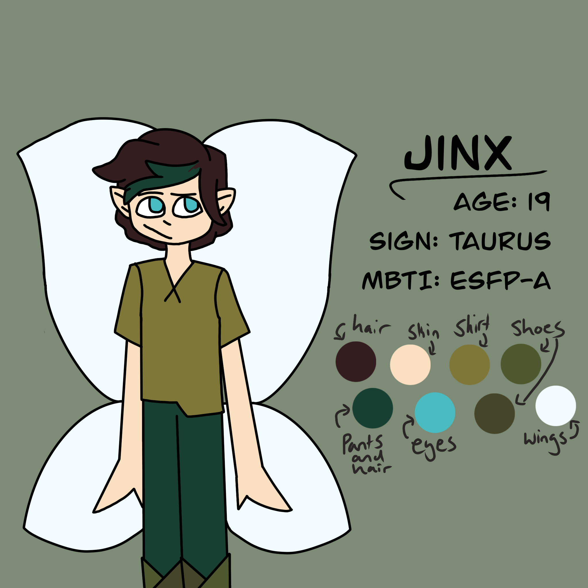

This page of my portfolio is dedicated to my personal artwork. These pieces feature characters I created for larger scale projects I've been working on over the past few years. This artwork is also available on my social media accounts as well as more content related to these characters.

This is a lineup of some of my original characters. I use this image as a reference for the designs and color palettes of these characters when I create digital art of them.

This is an image I used to redraw every year for my Instagram. It features some more of my original characters.

This is an example of the ref sheets I made for some of my characters. This one is for Jinx specifically. The ref sheets each have the age, zodiac sign, and mbti type of the character that they are for. I also included the color palette for the character, each color is labelled with the part of the design it is used in.